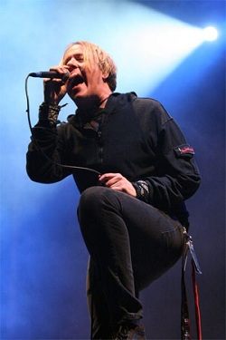

{kind=link}
Con las fuerzas renovadas y con unas temperaturas más relajadas que las del viernes, llegamos a la segunda jornada de Sonisphere a tiempo para disfrutar del groove metal con percusiones tribales del único grupo español del festival. Poco tiempo les hizo falta a Vita Imana para confirmarnos que en directo suenan como un puñetazo en la cara. Aquí podéis ver un video para saber de lo que estoy hablando. Es una pena que el festival no apostase por más producto nacional y grupos emergentes.
Los siguientes eran todo un plato fuerte a un horario demasiado vespertino. Mastodon actuó en el escenario principal, y a mi pesar, basó su repertorio únicamente en su último disco The Hunter, salvo por Crystal Skull, y el último tema, Blood and Thunder. En líneas generales, el grupo defendió su limitada interpretación vocal, aunque no consiguó caldear mucho el ambiente salvo por Curl of the Burl y el coreado tema final. Incluso más que otras veces que les he visto en directo, quedó la sensación de que su concierto podría haber sido más.
{kind=link}
Ghost fue un grupo que, aunque demostró ganar enteros y potencia en directo —el escenario secundario gozaba de mucho mejor sonido—, no consiguió llevarme a su terreno pomposas melodías e instrumentación de rock clásico. Tengo la sensación de que su parafernalia —todos ataviados con túnicas y su vocalista disfrazado de papa satánico, balanceando un botafumeiro— les crea una puesta en escena demasiado mística y morbosa para lo que su ramplona música ofrece.
Bajo una enorme bandera con su logo y el habitual muro de (falsos) amplificadores, Slayer dieron una lección de veteranía y saber hacer en el escenario principal. La banda californiana se dedicó a presentar los temas de su aún reciente World Painted Blood para abrir el concierto, pero la tónica general fue la descarga de clásico tras clásico. Con un recinto abarrotado, los incondicionales del grupo pudieron hacer mosh con hasta cuatro temas del celebrado Reign in Blood. Una lástima que desde su operación de columna Tom Araya esté tan estático, pero no es nada que no puedan compensar las imponentes figuras de Kerry King y Gary Holt de Exodus —que sustituía temporalmente al convaleciente Jeff Hanneman—, que se aprovecharon de la pasarela del escenario para ir de un lado al otro del mismo. Las canciones algo más pausadas de South of Heaven fueron el contrapunto a la velocidad que dominó todo el concierto. Con una bordada War Ensemble Slayer despidieron su concierto como suelen hacer, sin florituras pero sin tregua.
{kind=link}
Con el permiso de los cabezas de cartel y Kyuss Lives!, Enter Shikari se subió al podio de los mejores conciertos del festival. Mientras Slayer congregaba a la mayor parte del público, los británicos montaron un increíble fiestón a base de derrochar muchísima energía, y de poder disfrutar de su sonido a la máxima potencia, todo lo contrario de lo que era la tónica en el escenario principal. Sabiendo elegir lo mejor de su flojo último disco, y con buenas aportaciones de los dos anteriores, Enter Shikari nos hizo bailar a ritmo de temas como: Meltdown, Sorry You’re Not a Winner o Destabilise. Con Rou Reignolds enloquecido, subiendo por la estructura, viajando sin frenos por el escenario en los carros del equipo, el grupo nos deleitó con un tramo final de nota, con esa bestial combinación de hardcore y electrónica en forma de Arguing with Thermometers, Ssnakepit y Zzzonked.
Con el escenario principal en su máximo pico de afluencia, Metallica salió al escenario arropado por sus fans más incondicionales —miembros Metclub que ocupaban el llamado snakepit, bordeado por las pasarelas—, y a los situados en una capa más exterior, aquellos que pagaron más por sus entradas para gozar de los privilegios del black circle. Todo esto hace entender, que incluso para aquellos que consiguieron posiciones más avanzadas, el concierto tuviera que verse desde la lejanía, aunque esto fue suplido en parte por el encendido de una pantalla adicional tras la torre de sonido.
{kind=link}
El concierto de Metallica fue sobresaliente, aunque no esperaba menos. Un grupo de su relevancia y experiencia, que ha tocado miles de veces y en cientos de ciudades la mayoría de temas su setlist —los clásicos y el Black Album, en conmemoración de su 20 aniversario— no podía fallar. El balance del sonido de fue de lo mejor que se escuchó en el escenario principal, aunque se echó de menos una mayor potencia. El grupo, que por su forma de tocar pareciese estar en una segunda juventud se presentó con The Ecstasy of Gold de Morricone, y siguió con Hit the Lights, con todo el público hipermotivado. Antes de lanzarse a interpretar el Black Album, presentado con imágenes documentales, los californianos hicieron las delicias con Master of Puppets, The Shortest Straw, From Whom The Bells Tolls y Hell and Back, uno de sus últimos temas, que no llegó a aparecer en Death Magnetic. La interpretación del disco negro tuvo sus puntos fuertes, por supuesto, en sus singles, pero hay que reconocer que no su mejor disco, y se echó en falta “otros colores”. Así, tras un segundo descanso, el grupo volvió con Battery, One y Seek and Destroy, utilizando a tumba abierta todo un arsenal de pirotecnia y efectos lumínicos que quedó en algunos momentos algo exagerado.
Si no no habíamos tenido suficiente metal con las dos horas y media del concierto de Metallica, todavía aguardaban Gojira, Clutch y Fear Factory, y nunca mejor dicho «aguardaban» porque el retraso era bastante signficativo. Los death-metaleros franceses nos castigaron los oídos con un concierto notable, repasando toda su discografía, rematando con temas del From Mars To Sirius y del The Way of All Flesh. Sorpredentemente de su próximo disco solo tocaron L’Enfant Sauvage, al tiempo que se remontaban a temas de los 90 cuando se hacían llamar Godzilla.
Clutch, los barrigudos estandartes del metal sureño, fueron para mí la sopresa del festival. Sin conocer mucho el repertorio, con Clutch es inevitable no mover el cuello e inmediatamente quedarte con las melodías en la cabeza. Sonido y hasta pose sabbathiana de un grupo que ejecutó el concierto a la perfección. Mención especial al cantante, Neil Fallon, pura actitud macarra y un portento a la voz. Parece que la banda está teniendo un repunte de popularidad tras la aparición de una canción en la serie The Walking Dead, y aunque el público se empeñaba en pedir Electric Worry, el mismo Fallon se negaba a terminar el concierto «¡No, vámonos, no!«. Un concierto redondo en el que con total seguridad el grupo abandonó el escenario pequeño con un buen puñado de nuevos seguidores.
Como colofón al festival nos esperaba Fear Factory. Con el regreso de Cazares, pero sin Herrera ni Wolves, y, por qué no decirlo, sin demasiadas expectativas en general, nos dispusimos a agotar las pocas fuerzas que quedaban. Por mi parte no podrían haber empezado mejor, despachando los tres primeros temas de Obsolete, probablemente el álbum más variado de una banda que peca de repetirse demasiado dentro de un mismo disco. Toda una suerte que, con los retrasos acumulados por otras bandas, a los californianos les cambiaran al escenario nº2, donde el sonido (si no eres Metallica) se escuchaba mucho más nítido. Pudimos comprobar las ganas de Burton C. Bell durante todo el concierto, nada que reprochar a sus guturales ni a su afán por mantener al público saltando y coreando los estribillos. Donde no se le vió tan fuerte fue en las partes melódicas en las que por momentos la voz dejaba de escucharse.
{kind=link}
A pesar de lo escueto de su setlist, no faltaron sus envites más emblemáticos: Linchpin, Powershift, Self Bias Resistor o la despedida con Replica como un arrollador chorro de rabia sin perder la épica que se espera de un futuro apocalípotico gobernado por las máquinas. Sintetizando, mucho mejor de lo que esperaba y personalmente, de los más destacados de todo el Sonisphere.
Crónica Slayer & Clutch: Jorgenius
Crónica Fear Factory: Sehnsucht
Fotos: Facebook Sonisphere, Helpress
Apoyános